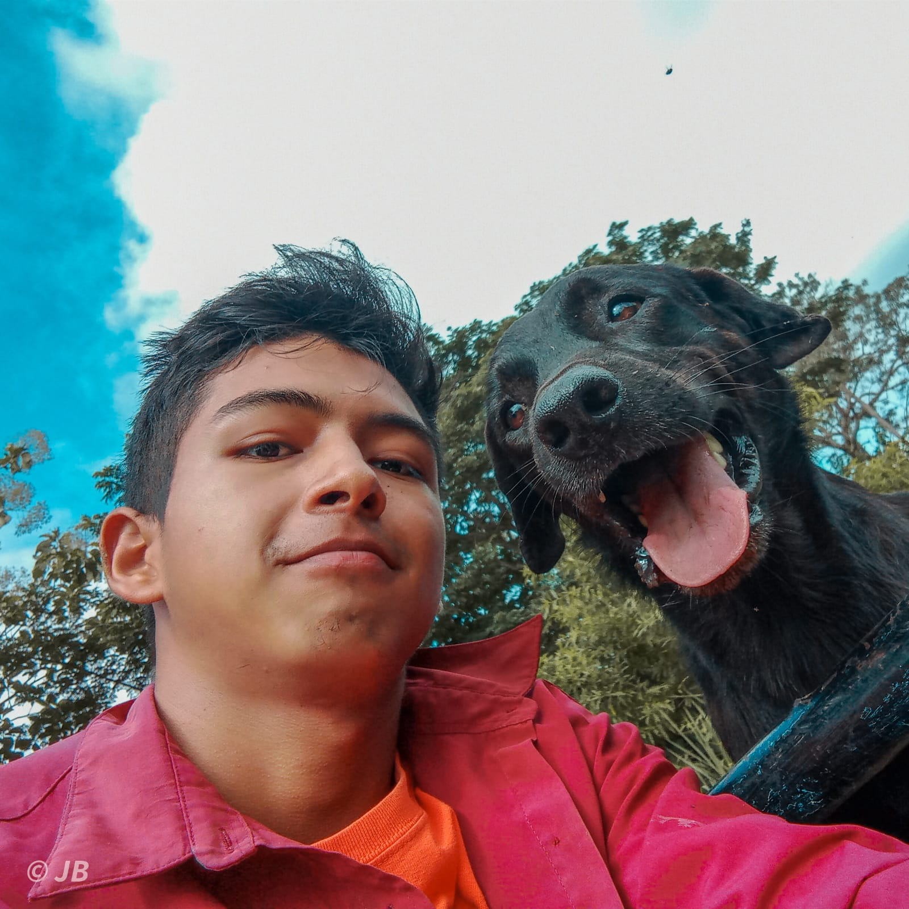

Veterinaria aplicada + tecnología real
Veterinaria, tecnología y soluciones digitales para el campo
Soy Juan Bajaña, estudiante de Medicina Veterinaria y creador de herramientas digitales que buscan transformar el aprendizaje veterinario, la gestión clínica y el manejo productivo de los animales.
No creo proyectos aislados. Estoy construyendo un ecosistema veterinario digital.
VetTech

Sobre mí
Una visión veterinaria que también se construye con código
Soy Juan Bajaña, estudiante de Medicina Veterinaria en la Universidad Técnica de Machala. Me apasionan los animales, el campo, la producción animal y la programación. Desde mi formación académica he buscado crear herramientas que no se queden solo en ideas, sino que puedan resolver problemas reales para estudiantes, clínicas veterinarias, tutores de mascotas y granjas.
Medicina Veterinaria
Formación enfocada en salud animal, producción y aprendizaje aplicado.
Soluciones digitales
Herramientas pensadas para ordenar información y volverla útil.
Campo y animales
Enfoque en clínicas, tutores, estudiantes y sistemas productivos.
Datos e innovación
Interés en IA, NFC, estadística y sistemas de gestión veterinaria.
Misión y Visión
Herramientas con propósito para una veterinaria más conectada
Misión
Desarrollar herramientas digitales accesibles, prácticas y útiles para mejorar el aprendizaje veterinario, la gestión clínica y el manejo productivo de los animales, integrando conocimiento veterinario, programación, datos y tecnología aplicada al campo.
Visión
Construir un ecosistema tecnológico veterinario que conecte la educación, las clínicas, los tutores de mascotas y las granjas, permitiendo que la información animal sea más organizada, segura, accesible y útil para tomar mejores decisiones.
Mis proyectos
Cada proyecto nace de un problema real
Cada proyecto nace de un problema real y busca convertirse en una herramienta útil para estudiantes, clínicas, tutores y granjas.
Para estudiantes de Medicina Veterinaria
Suite Vet
Problema que resuelve
Muchos estudiantes tienen información dispersa en apuntes, PDFs, imágenes, tablas y clases. Suite Vet busca organizar ese conocimiento en una plataforma práctica, interactiva y útil para estudiar.
Descripción
Suite Vet es una herramienta académica pensada para estudiantes de veterinaria. Integra módulos de estudio, calculadoras, casos clínicos, farmacología, fisiología, microbiología, nutrición animal y otras áreas clave de la carrera.
Toque diferencial
No es solo una app de apuntes. Es una plataforma de estudio veterinario con herramientas para aprender, calcular, repasar y aplicar conocimientos en clases.
Para clínicas veterinarias y tutores
Cartilla Digital
Problema que resuelve
Las cartillas físicas se pierden, se dañan o se olvidan. Además, muchas clínicas necesitan organizar mejor sus registros preventivos, vacunas, desparasitaciones y controles.
Descripción
Cartilla Digital es una plataforma para clínicas veterinarias que permite registrar pacientes, tutores, vacunas, desparasitaciones, controles preventivos y próximos eventos de salud. También permite que el tutor acceda a la información de su mascota de forma digital.
Toque diferencial
Convierte la cartilla tradicional en un sistema digital moderno, con historial organizado, códigos QR, vista para tutores, recordatorios y mejor control preventivo.
Para granjas porcinas y bovinas
Ecosistema CATTLE
Problema que resuelve
Muchas granjas manejan la información productiva en cuadernos, hojas sueltas o archivos de Excel desordenados. Esto dificulta controlar animales, producción, reproducción, sanidad, costos y decisiones.
Descripción
CATTLE es un ecosistema de soluciones digitales para el manejo animal en granjas. Su objetivo es organizar la información productiva, sanitaria, reproductiva y económica de los animales mediante herramientas adaptadas al campo.
- CATTLE Porcinos: gestión para granjas porcinas.
- CATTLE Bovinos: visión futura para ganadería bovina.
Toque diferencial
CATTLE busca integrar identificación animal, registros digitales, análisis estadístico, finanzas, inteligencia artificial y tecnología NFC para mejorar el manejo en campo.
Ecosistema
Un ecosistema veterinario digital en crecimiento
Suite Vet forma al estudiante. Cartilla Digital digitaliza la clínica. CATTLE transforma la gestión de granjas. Juntos representan una visión: unir veterinaria, tecnología, datos e innovación para resolver problemas reales.
Suite Vet
Cartilla Digital
CATTLE
Educación veterinaria + salud animal + producción animal + tecnología
Galería
Imágenes para mostrar la historia, el campo y los avances
Foto personal
Campo y animales
Suite Vet
Cartilla Digital
CATTLE
Prototipos y avances
Mi camino
Una ruta construida entre aprendizaje, animales y tecnología
-
Inicio
Interés por la veterinaria, los animales y el campo.
-
Aprendizaje
Primeros pasos en programación y desarrollo web.
-
Suite Vet
Creación de una herramienta académica para estudiantes de veterinaria.
-
Cartilla Digital
Digitalización de registros preventivos para clínicas y tutores.
-
CATTLE
Construcción de un ecosistema para granjas porcinas y bovinas.
-
Futuro
Apps móviles, IA, NFC, análisis de datos y tecnología aplicada al campo.
Contacto
Construyamos algo con propósito
Estoy abierto a seguir aprendiendo, colaborar, presentar mis proyectos y crear soluciones que conecten la veterinaria con la tecnología.
- Correo bajanajuan710@gmail.com
- GitHub Placeholder editable
- LinkedIn Placeholder editable
- Redes Placeholder editable